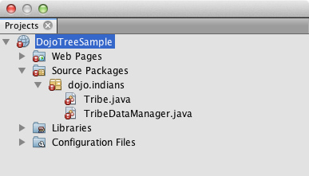
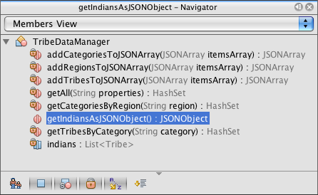

Apache NetBeans
Apache NetBeansLatest release
JSONを使用したDojoツリーのArrayListへの接続
| This tutorial needs a review. You can open a JIRA issue, or edit it in GitHub following these contribution guidelines. |
Webアプリケーションでは、Web 2.0機能の重要性が増しつつあります。多くのWebアプリケーションはDojoなどのJavaScriptツールキットを使用しており、これにより、Webページの動作をデスクトップ・インタフェースに近づけることができる一方、ブラウザの非互換性に対処し、標準に準拠した使いやすく保守可能なコードを利用できます。
このチュートリアルは、「Java Oneハンズオン・ラボ: Leveraging JavaScript Toolkits for End-to-End Connectivity in Web Applications」を基にしており、Dojoツリー・ウィジェットをWebページに追加して構成する方法と、サーバー側からJSON形式でツリー・リクエストに応答できるようにする方法について説明しています。このとき、http://json.orgから無料で利用できる一連のJavaクラスを使用して、ArrayListのデータを処理してJSON形式にします。

Figure 1. このページの内容は、NetBeans IDE 7.2、7.3、7.4および8.0に適用されます
このドキュメントを完了するには、次のソフトウェアとリソースが必要です。
| ソフトウェアまたはリソース | 必須バージョン |
|---|---|
7.2、7.3、7.4、8.0、Java EE |
|
7または8 |
|
GlassFishサーバー または Tomcatサーブレット・コンテナ |
Open Source Edition 3.1.xまたは4.x _ _ .xまたは8.x |
バージョン1.8.x以降 |
|
n/a |
*注意: *
-
このチュートリアルを完了するには、いくつかの手順でインターネット接続が必要になります。
-
NetBeans IDE Java EEのJavaダウンロード・バンドルでは、IDEとともにGlassFish Server Open Source Editionをインストールして登録することもできます。このチュートリアルでは、クライアント・サーバー通信のシミュレーションを行うために、サーバーが必要です。
-
完成したプロジェクトは次のようになります。

Figure 2. ブラウザに表示された完成した課題
サンプル・プロジェクトを開く
最初に、IDEでサンプル・プロジェクトを開きます。プロジェクトが開いたら、「プロジェクト」ウィンドウでプロジェクト・ノードを展開し、プロジェクトで使用されるDojoリソースおよびライブラリを調査します。
-
チュートリアルのDojoサンプル・プロジェクトをコンピュータ上の場所にダウンロードします。
-
IDEツールバーの「プロジェクトを開く」ボタン(
 )をクリックして、「プロジェクトを開く」ダイアログ・ボックスを開きます。
)をクリックして、「プロジェクトを開く」ダイアログ・ボックスを開きます。 -
「プロジェクトを開く」ダイアログで、コンピュータ上のDojoサンプル・プロジェクトを特定し、「プロジェクトを開く」をクリックします。
IDEで`DojoTreeSample`プロジェクトを開くと、参照の問題が存在することを示すエラー・バッジがプロジェクトに付きます。

Figure 3. プロジェクトの参照の問題を示す赤いテキストとエラー・バッジ
プロジェクトで使用されているJavaクラス(Tribe`および`TribeDataManager)はJSON JARファイルに見つかったクラスを参照していますが、これは後で「サードパーティJSON変換ソースをJARファイルとしてプロジェクトに追加」の項で追加するため、参照の問題が存在します。
*注意: *「プロジェクト」ウィンドウ([Ctrl]-[1]、Macの場合は[⌘]-[1])は、プロジェクト内の重要な項目の_論理ビュー_を示す、プロジェクト・ソースへのメイン・エントリ・ポイントです。「ファイル」ウィンドウ([Ctrl]-[2]、Macの場合は[⌘]-[2])には、プロジェクトの_ディレクトリ・ベースのビュー_が表示され、「プロジェクト」ウィンドウでは表示されないすべてのファイルやフォルダが含まれます。
-
「プロジェクト」ウィンドウで`Web Pages`ノードを展開します。
「プロジェクト」ウィンドウの`Web Pages`ノードの下に resources フォルダが表示されます。 resources フォルダには、Dojo toolkitからのDojoコアとDijitライブラリが含まれます。Dojoのツリー・ウィジェットを実装するには、コア・ライブラリの`ItemFileReadStore`モジュールと、Dijitライブラリに含まれている`Tree`ウィジェット自体の、2つのコンポーネントが基本的に必要です。
-
+dojo.data.ItemFileReadStore+: JSON構造化コンテンツをHTTPエンドポイント(このチュートリアルではサーブレット)から読み取り、すべての項目をメモリー内に保存して単純にすばやくアクセスできるようにします。 -
+dijit.Tree+: `ItemFileReadStore`から取得されたJSONデータを表示するツリー・ウィジェットです。
*注意:*このプロジェクトでは、`DojoX`ライブラリは不要です。
-
「プロジェクト」ウィンドウで`Libraries`ノードを展開し、必要なすべてのライブラリがクラスパスにあることを確認します。
*注意:*構成によっては、不足しているサーバーの問題を解決しなければならないことがあります。`Libraries`ノードの下に <Missing Java EE Server> ノードが表示される場合は、プロジェクト・ノードを右クリックし、ポップアップ・メニューで「不足しているサーバーの問題を解決」を選択します。

Figure 4. プロジェクトの「resources」フォルダに追加されたDojoライブラリとDijitライブラリ
「参照の解決」ダイアログ・ボックスで「GlassFish Server」を選択します。「OK」をクリックします。

Figure 5. プロジェクトの「resources」フォルダに追加されたDojoライブラリとDijitライブラリ
このステージで、IDEで`DojoTreeSample`プロジェクトが正常に開かれ、Dojoライブラリがアプリケーションに含められたことが確認されました。次のステップでは、Treeウィジェットをエンド・ユーザーに表示するHTMLファイルの作業を始めます。
プロジェクト・ファイルからツールキット・リソースへのリンク
ツールキットのリソースを使用するには、コア・ライブラリに含まれている`dojo.js`ファイルにリンクする必要があります。`dojo.js`ファイルは、Dojoの_ソース・ローダー_であり、使用すべき正しいホスト環境を判定します。その間に、`parseOnLoad`パラメータを追加して`djConfig`の構成も行うことができます。
-
「プロジェクト」ウィンドウで、`dojoDemo.html`ファイルをダブルクリックしてエディタで開きます。
-
dojoDemo.html`ファイルで、次の<script>`タグ(太字)を`<head>`タグの間に追加します。
<!-- TODO: link to Dojo resources here -->
*<script type="text/javascript">
var djConfig = {parseOnLoad: true,
isDebug: true};
</script>
<script
type="text/javascript"
src="resources/dojo/dojo.js">
</script>*
</head><script type="text/javascript">
var djConfig = {parseOnLoad: true,
isDebug: true};
</script>
<script
type="text/javascript"
src="resources/dojo/dojo.js">
</script>
*<style type="text/css">
@import "resources/dijit/themes/nihilo/nihilo.css";
</style>*`nihilo`テーマはツールキットにデフォルトで含まれています。「プロジェクト」ウィンドウで`dijit/themes`フォルダを展開して、デフォルトで提供されている他のサンプル・テーマを表示できます。
-
次のクラス・セレクタをページの`<body>`タグに追加して、使用しているテーマの名前を指定します。これを実行すると、ページにロードされているすべてのDojoウィジェットが、テーマに関連付けられたスタイルを使用してレンダリングされます。
<body *class="nihilo"*>この段階で、`dojoDemo.html`ファイルは、Dojoコア・ライブラリとDijitライブラリを参照する任意のコードを受け入れる準備ができ、すべてのウィジェットをDojoの`nihilo`テーマを使用してレンダリングするようになりました。
Dojoツリー・ウィジェットの追加と構成
`dojo.js`にリンクした後は、Dojoのモジュールとウィジェットを使用するコードを追加し始めることができます。まず、`dojo.require`文を使用して、`dijit.Tree`ウィジェットと`dojo.data.ItemFileReadStore`をロードするコードを追加します。次に、ウィジェットとモジュール自体をページに追加します。
-
次の`dojo.require`文(太字)をファイルの
<body<タグの間に追加します。
<script type="text/javascript">
// TODO: add dojo.require statements here
*dojo.require("dojo.data.ItemFileReadStore");
dojo.require("dijit.Tree");*
</script>-
+dojo.data.ItemFileReadStore+: JSON構造化コンテンツをHTTPエンドポイントから読み取り(JSONレスポンスを開始するサーブレットの準備で、この目的に使用するサーブレットを実装します)、すべての項目をメモリー内に保存して単純にすばやくアクセスできるようにします。 -
+dijit.Tree+: `ItemFileReadStore`から取得されたJSONデータを表示するツリー・ウィジェットです。-
次のコード(太字)を追加して、`ItemFileReadStore`および`Tree`ウィジェットを追加します。
-
<!-- TODO: specify AJAX retrieval -->
<!-- TODO: add Tree widget and configure attributes -->
*<div dojoType="dojo.data.ItemFileReadStore"
url="TribeServlet"
jsId="indianStore">
</div>
<div dojoType="dijit.Tree"
store="indianStore"
query="{type:'region'}"
label="North American Indians">
</div>*-
`ItemFileReadStore`では、JSONデータを返すサーバー側リソースを指すように`url`プロパティを指定する必要があります。後で説明するとおり、これは`TribeServlet`です。`jsId`プロパティを使用すると、取得されたJSONデータにIDを付けることができ、ウィジェットはそれを使用してデータ・ストアを参照できます。
-
`ツリー`では、`store`プロパティを使用して、JSONデータを提供する`ItemFileReadStore`を指します。`query`プロパティを使用すると、JSONファイルで使用されているキーワードに基づいて、データの表示を調整できます。
*注意:*このコードを追加した後でエディタに表示される警告は無視できます。
この段階で、`dojoDemo.html`ファイルは完成し、プロジェクトに対する_クライアント側の_変更はすべて適用されました。次の2つの手順では、ツリー・リクエストが行われたときのプロジェクトの_サーバー側の_動作に影響を与える変更を加えます。
サードパーティJSON変換ソースをJARファイルとしてプロジェクトに追加
このチュートリアルでは、ArrayListサンプル・データを抽出するロジックが、`Tribe`クラスと`TribeDataManager`クラスに準備されています。基本的に、JSON変換を処理するサードパーティJavaクラスをプロジェクトに含め、これらのクラスの`import`文を`Tribe`クラスと`TribeDataManager`クラスに追加するのみで済みます。ただし、これを実行するには、まずサードパーティJavaクラスをコンパイルし、Java Archive (JARファイル)を作成する必要があります。これには、IDEのJavaクラス・ライブラリ・ウィザードを使用できます。
-
http://json.org/javaにアクセスすると、JSON変換用のJavaクラスは無料で利用できます。「Free source code is available」というリンクをクリックし、ソースが入っている`JSON-java-master.zip`ファイルをダウンロードします。
-
`JSON-java-master.zip`ファイルを解凍すると、抽出されたフォルダには、http://json.org/javaに一覧表示されているソースが入っています。
この時点で、これらのソースをコンパイルして、`DojoTreeSample`プロジェクトに追加するJava Archive (JARファイル)を作成します。
-
ツールバーの「新規プロジェクト」ボタン()をクリックして新規プロジェクト・ウィザードを開きます。
-
新規プロジェクト・ウィザードで、「Java」カテゴリの「Javaクラス・ライブラリ」プロジェクト・テンプレートを選択します。「次」をクリックします。
-
Javaクラス・ライブラリ・ウィザードの「名前と場所」パネルで、「プロジェクト名」として「
json」を入力します。「終了」をクリックします。
「終了」をクリックすると新しいプロジェクトが作成され、「プロジェクト」ウィンドウで開きます。
Dojoツールキット・リソースを DojoTreeSample プロジェクトにコピーしたのと同じ方法で、 json プロジェクトにダウンロードするJSONソースをコピーする必要があります。
-
`JSON-java-master.zip`アーカイブを抽出し、ルート・フォルダにあるJavaソース・ファイルをコピーします([Ctrl]-[C]、Macの場合は⌘-C)。
*注意:*抽出したアーカイブのルート・フォルダにある`zip`フォルダとその内容をコピーする必要はありません。
-
IDEの「プロジェクト」ウィンドウで「ソース・パッケージ」ノードを右クリックし、ポップアップ・メニューで「新規」>「Javaパッケージ」を選択します。
-
パッケージ名として*json*と入力します。「終了」をクリックします。
-
`json`ソース・パッケージを右クリックし、ポップアップ・メニューで「貼付け」を選択します。
パッケージを展開すると、 json ソースが表示されます。

Figure 6. 新しい「json」プロジェクトに含まれるようになったソース
-
「プロジェクト」ウィンドウで「
json」プロジェクト・ノードを右クリックし、「消去してビルド」を選択してプロジェクトをビルドします。
プロジェクトをビルドすると、すべてのJavaクラスが`.class`ファイルにコンパイルされます。IDEは、コンパイル済クラスを格納するための`build`フォルダと、プロジェクトのJARファイルを格納する`dist`フォルダを作成します。これらのフォルダはIDEの「ファイル」ウィンドウから表示できます。
`json`プロジェクトをビルドした後、「ファイル」ウィンドウを開き([Ctrl]-[2]、Macの場合は[⌘]-[2])、`json`フォルダを展開します。`build`フォルダには`JSON-java-master.zip`ファイルのソースがコンパイルされたもの、`dist`フォルダには`DojoTreeSample`プロジェクトで参照する必要のあるJARファイルが入っています。

Figure 7. プロジェクトの「build」フォルダに表示されたコンパイル済ソース
`json.jar`ファイルができたので、`DojoTreeSample`プロジェクトを開いたときから発生している参照の問題を解決できます。
-
「プロジェクト」ウィンドウで`DojoTreeSample`の「ライブラリ」ノードを右クリックし、「JAR/フォルダの追加」を選択します。次に、ダイアログで`json`プロジェクトの`dist`フォルダの場所に移動し、`json.jar`ファイルを選択します。
「ライブラリ」ノードを右クリックしてポップアップ・メニューで「プロジェクトの追加」を選択し、「プロジェクトの追加」ダイアログ・ボックスで`json`プロジェクトを探すこともできます。
ダイアログを終了すると、json.jar`ファイルがプロジェクトの「`ライブラリ」ノードの下に表示されます。

Figure 8. プロジェクトにより参照されるJARファイル
*注意: *json.jar`ファイルはプロジェクトの「`ライブラリ」ノードの下に表示されますが、元の場所から参照されます。コピーされてプロジェクトに追加されるのではありません(たとえば、「ファイル」ウィンドウで`DojoTreeSample`プロジェクトの下には見つかりません)。したがって、JARファイルの場所を変更すると、参照が壊れます。
-
「
ソース・パッケージ」> `dojo.indians`パッケージを展開し、`Tribe`クラスと`TribeDataManager`クラスをダブルクリックしてエディタで開きます。 -
必要なインポート文を両方のクラスに追加します。各クラスで、エディタ上で右クリックし、「インポートを修正」を選択します。
`Tribe`クラスには次のインポートが必要です。
import dojo.org.json.JSONException;
import dojo.org.json.JSONObject;`TribeDataManager`クラスには次のインポートが必要です。
import dojo.org.json.JSONArray;
import dojo.org.json.JSONException;
import dojo.org.json.JSONObject;JSONクラスのAPIもhttp://json.org/javaで提供されています。後で`Tribe`と`TribeDataManager`のコードを調べるので、このページを開いておいてください。
-
`TribeDataManager`のArrayListを調べます。ArrayListは`Tribe`オブジェクトのコレクションです。ArrayListの最初の要素を調べると、新しい`Tribe`オブジェクトが作成されてリストに追加されていることがわかります。
indians.add(new Tribe("Eskimo-Aleut", "Arctic", "Alaska Natives"));各`Tribe`オブジェクトは、「部族」、「カテゴリ」および「地域」という3つの情報を収集します。この課題用のデータは、Wikipediaの「Native Americans in the United States」のエントリから取得されています。ご存知のとおり、複数の「部族」が1つの「カテゴリ」に分類され、多数のカテゴリがより大きな1つの「地域」に含まれる場合があります。
-
`Tribe`クラスをエディタで開くと、これは基本的にJavaBeanであり、`toJSONObject()`メソッドのみが異なることがわかります。
public JSONObject toJSONObject() throws JSONException {
JSONObject jo = new JSONObject();
jo.put("name", this.name);
jo.put("type", "tribe");
return jo;
}-
再度`TribeDataManager`に切り替え([Ctrl]-[Tab])、クラスに含まれているメソッドを調べます。ナビゲータを開いて([Ctrl]-[7]、Macの場合は[⌘]-[7])、クラスに含まれているフィールドとプロパティのリストを表示します。

Figure 9. ナビゲータを使用した、クラスのフィールドおよびプロパティの表示
その中で最も重要なメソッドは`getIndiansAsJSONObject()`です。このメソッドはArrayListをスキャンし、データを処理して`JSONObject`の形式で返します。Dojoの`ItemFileReadStore`に必要なのは、`文字列`形式のJSONObjectです。
public static JSONObject getIndiansAsJSONObject() throws JSONException {
JSONObject jo = new JSONObject();
JSONArray itemsArray = new JSONArray();
jo.put("identifier", "name");
jo.put("label", "name");
// add regions
addRegionsToJSONArray(itemsArray);
// add categories
addCategoriesToJSONArray(itemsArray);
// add tribes
addTribesToJSONArray(itemsArray);
jo.put("items", itemsArray);
return jo;
}-
`getIndiansAsJSONObject()`メソッドに関するJavadocを開きます。これは、ナビゲータに戻り([Ctrl]-[7]、Macの場合は[⌘]-[7])、メソッドの上にカーソルを置くことで行うことができます。または、メイン・メニューから「ウィンドウ」>「その他」>「Javadoc」を選択し、エディタでメソッド署名をクリックします。

Figure 10. JSONデータの例を示すTribeDataManagerのJavadoc
-
Javadocに示されているJSONデータの例を調べます。データの形式は、Dojoのドキュメントに示されている例に準拠しています。
NetBeans IDEのJavaデバッガ
次のステップでは、`getIndiansAsJSONObject()`メソッドをコールするサーブレットを実装します。これを行った後、次の手順を実行して、IDEのJavaデバッガを使用してメソッドをステップ実行し、`JSONObject`がどのように構成されているかを検証できます。
-
メソッドにブレークポイントを設定します(エディタの左マージンで行番号(行99)をクリックします)。

Figure 11. Javaデバッガを使用したコードのステップ実行
-
「プロジェクト」ウィンドウで「
DojoTreeSample」プロジェクトを選択します。 -
デバッガを実行します(ツールバーで「プロジェクトをデバッグ」(
 )ボタンをクリックします)。
)ボタンをクリックします)。 -
ツールバーの「ステップ・イン」(
 )ボタンと「ステップ・オーバー」(
)ボタンと「ステップ・オーバー」( )ボタンを使用します。
)ボタンを使用します。 -
変数と式の値を「ローカル変数」ウィンドウ(「ウィンドウ」→「デバッグ」→「変数」)で調べます。
Javaデバッガの詳細は、次のスクリーンキャストを参照してください。
このステップの中で、http://json.orgからのサードパーティ・ソースをコンパイルし、それらをJARファイルとして`DojoTreeSample`プロジェクトに追加しました。次に、JARファイルのクラス、`Tribe`クラスと`TribeDataManager`クラスに、インポート文を追加しました。最後に、`TribeDataManager`に含まれているメソッドのうち、ArrayListのデータをJSON文字列に変換するために使用されるいくつかのメソッドを調べました。
次のステップでは、受信するリクエストを`TribeDataManager`の`getIndiansAsJSONObject()`メソッドをコールして処理し、結果となるJSON文字列をクライアントにレスポンスとして送信するサーブレットを作成します。
JSONレスポンスを開始するサーブレットの準備
Webページに`ItemFileReadStore`を追加したとき、url`プロパティの値として「`TribeServlet」を指定しました。クライアントに対してJSONデータを準備して返す作業を担当するサーバー側では、これは送信先です。このサーブレットを作成しましょう。
-
「プロジェクト」ウィンドウで`dojo.indians`ソース・パッケージを右クリックし、「新規」>「サーブレット」を選択します。
-
新規サーブレット・ウィザードで、クラス名に「
TribeServlet」と入力します。`dojo.indians`がパッケージとして指定されていることを確認します。「次」をクリックします。

Figure 12. 新規サーブレット・ウィザードを使用したサーブレットの作成
-
デフォルトのサーブレット名とURLパターン値が正しいことを確認します。「終了」をクリックすると、サーブレットのスケルトン・クラスが生成されます。
サーブレットの機能は、`getIndiansAsJSONObject()`メソッドをコールし、このメソッドからのデータを使用してクライアント・リクエストに応答することです。JSON形式のレスポンスを準備するには、最初にレスポンスのMIMEタイプをJSON形式に設定する必要があります。
*注意:*ウィザードにより、サーブレット名とURLパターンが自動的に`web.xml`に追加されます。その結果、TribeServlet`のホスト・ドメイン(`http://localhost:8080/DojoTreeSample/)に対するすべてのリクエストが、dojo.indians.TribeServlet`クラスによって処理されます。エディタで`web.xml`を開くと、ファイルに<servlet>`および`<servlet-mapping>`要素が含まれているのがわかります。
-
次の変更(太字)を行って、`processRequest()`メソッドを変更します。
response.setContentType("*application/json*");この変更により、HTTPレスポンスの`Content-Type`ヘッダーが、返される内容がすべてJSON形式であることを示すように設定されます。
-
`processRequest()`メソッドの`try`ブロック内のコメントアウトされているコードを、次のように置き換えます(*太字*部分が変更箇所)。
try {
*JSONObject jo = null;
try {
jo = TribeDataManager.getIndiansAsJSONObject();
} catch (JSONException ex) {
System.out.println("Unable to get JSONObject: " + ex.getMessage());
}
out.println(jo);*
} finally {
out.close();
}コードを再フォーマットするには、エディタ内で右クリックし、「フォーマット」を選択します。
-
IDEのヒントを使用して、次のインポート文を追加します。
import dojo.org.json.JSONException;
import dojo.org.json.JSONObject;-
プロジェクトを実行するには、「プロジェクト」ウィンドウで`DojoTreeSample`プロジェクト・ノードを選択し、IDEのツールバーの「プロジェクトの実行」(
 )ボタンをクリックします。
)ボタンをクリックします。
ブラウザが開いて開始画面(dojoDemo.html)が表示され、上のスクリーンショットのように、Dojo TreeウィジェットでArrayListのデータが正しく表示されます。
ご意見をお寄せください
関連項目
Dojoの詳細は、公式ドキュメントを参照してください。
-
Dojoツールキットのリファレンス・ガイド: Reference Guide
-
オンラインAPIリファレンス: http://api.dojotoolkit.org/
JavaScriptとJavaScriptツールキットの機能の詳細は、netbeans.orgの次のリソースを参照してください。
-
jQueryを使用した、Webページの見た目と使いやすさの向上。jQueryの概要を説明し、WebページでHTMLマークアップにjQueryのアコーディオン・ウィジェットを適用する手順を示します。
-
Ajax入門(Java)。サーブレット・テクノロジを使用した単純なアプリケーションのビルド方法を示すと同時に、Ajaxリクエストの基盤となるプロセス・フローについて解説します。
-
_NetBeans IDEによるアプリケーションの開発_のJavaScriptファイルの作成